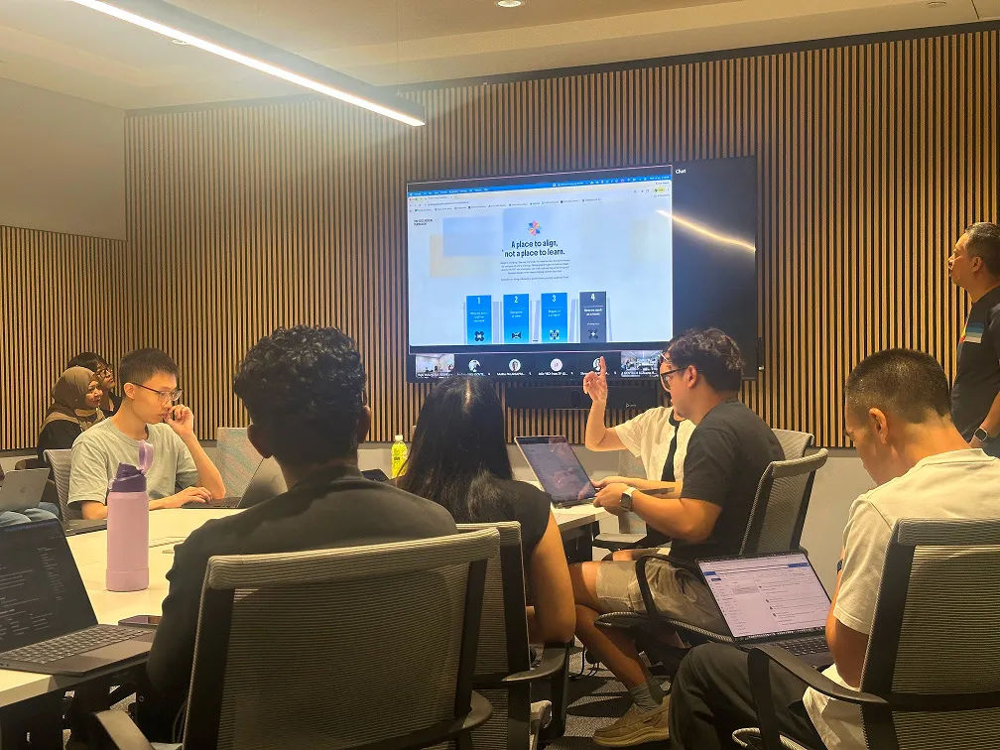
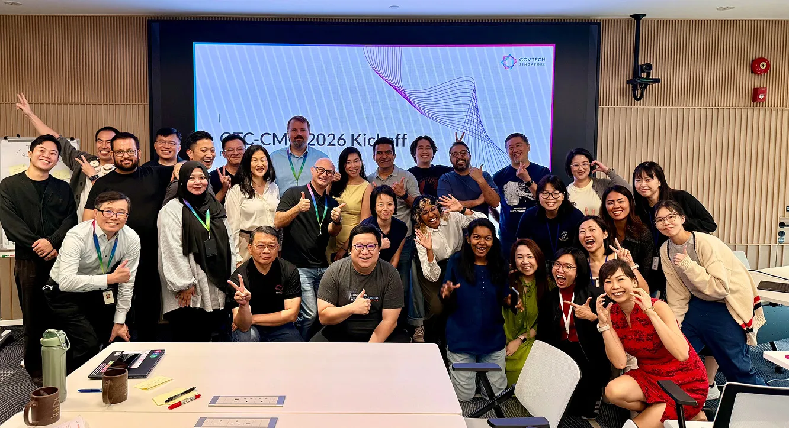
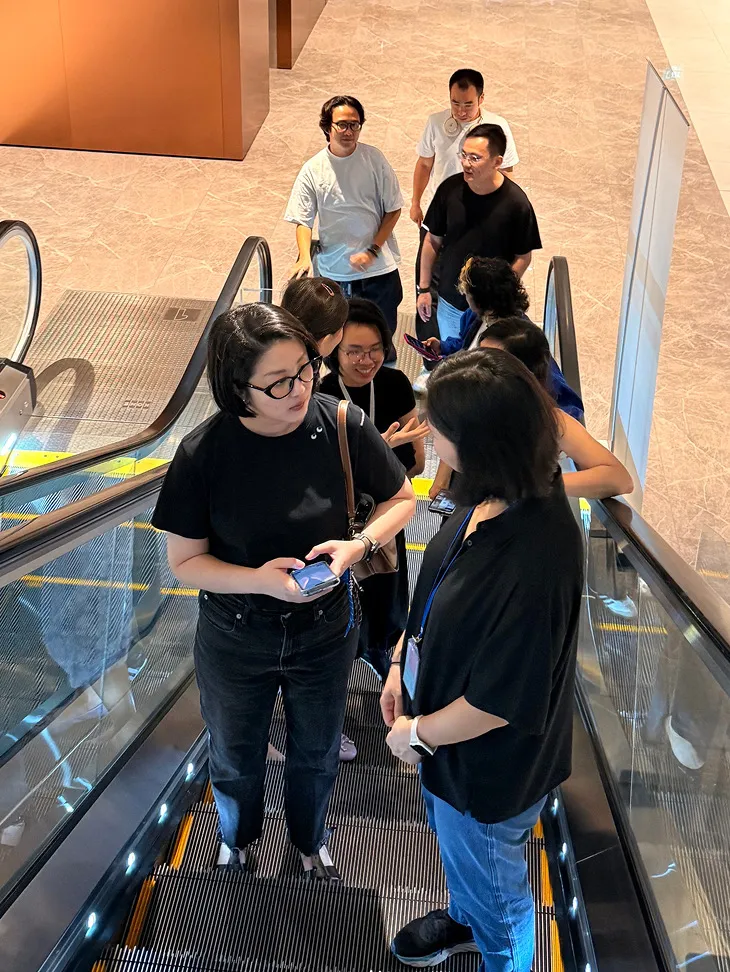
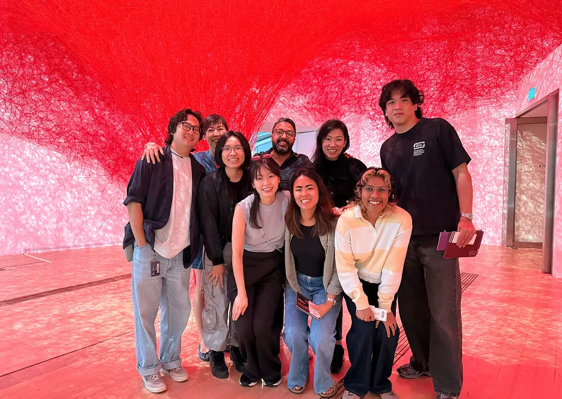
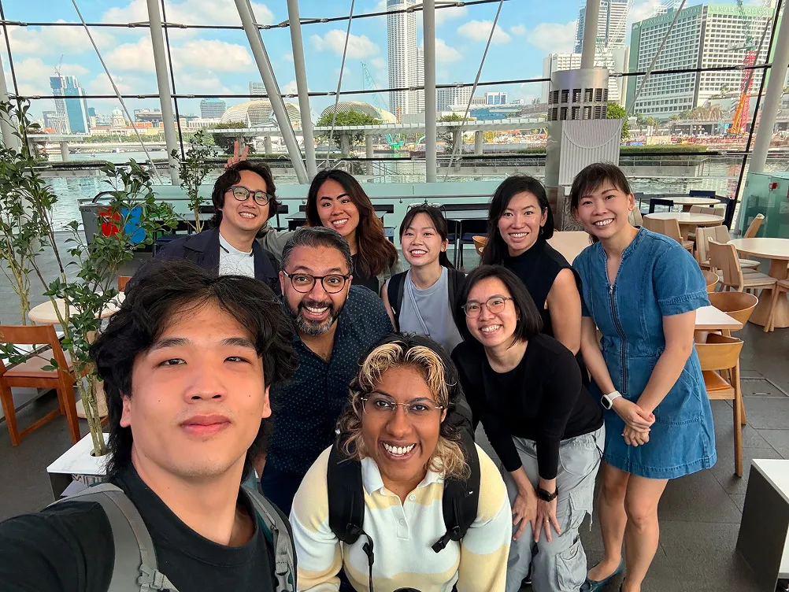
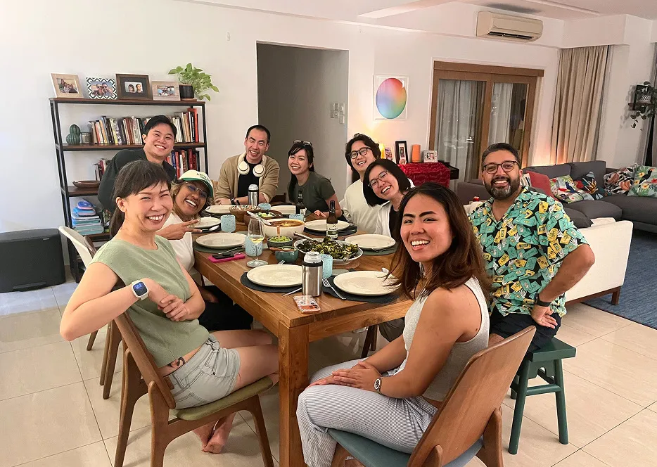
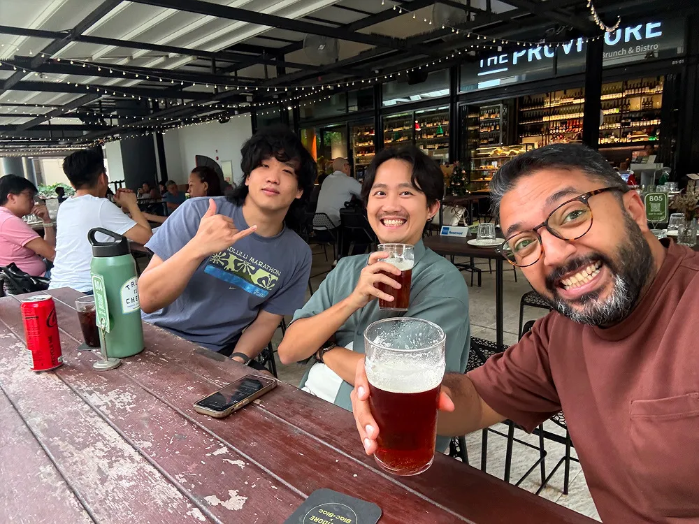
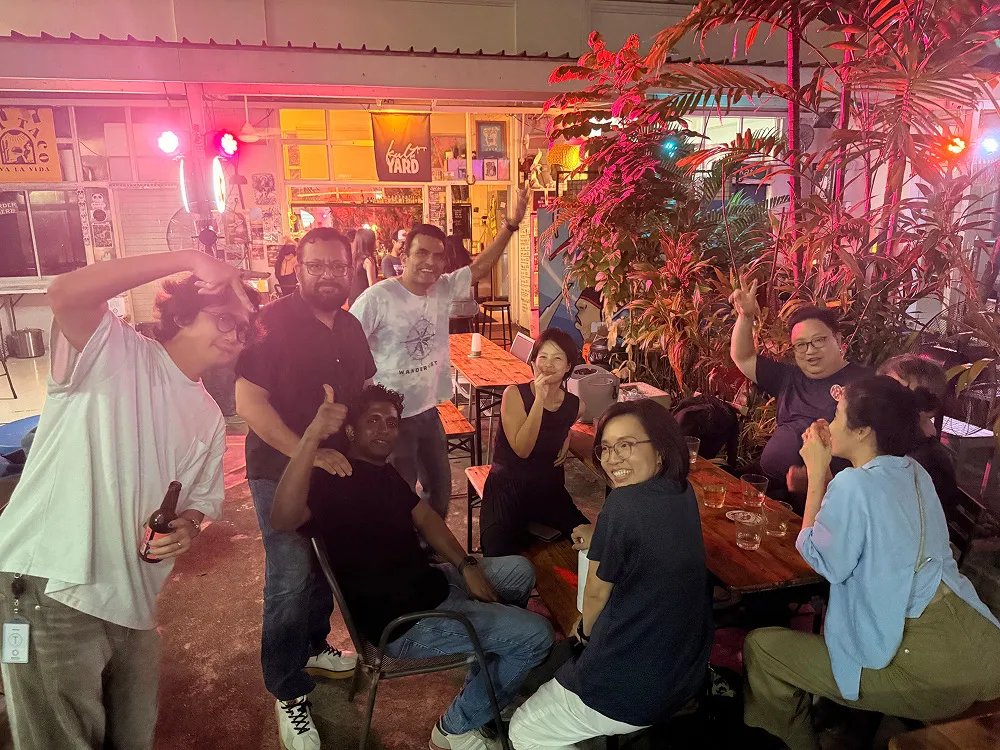
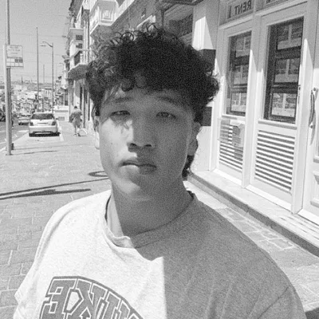

Behind the playbook
We’re the designers, researchers, and creative technologists behind GovTech Consulting. The playbook is how we think, this is what it looks like when we’re in it: on the ground, in the room, and occasionally around a dinner table.









Behind every framework and flow chart is a tight-knit crew of system-mappers, word-smiths, and pixel-pushers trying to make this document a little more human.
-
Nav
The Navigator
Lead & Direction
Nav provides the overarching direction and strategic vision for the team, keeping our efforts tightly aligned on the bigger picture. When we get bogged down by details, he adjusts the rudders and steers our creative winds back to clear waters.
-
Quinny & Mark
The Masters of Chaos & Playbook Orchestrators
Project Leads
Quinny and Mark are the dual engines driving the project. They conceptualized the playbook, gathered messy mountains of information, orchestrated endless rounds of feedback, and coaxed everyone across the publication finish line without losing their sanity.
-
Jing Qing
The Illustrious Illustrator
Visual Designer
Jing Qing is the force responsible for the “artistic blabla” — meaning the stunning illustrations, graphs, and visual metaphors that stop our ideas from looking like a wall of text.
-
Mimi
The Chaos Translator
Copywriter & Information Designer
When internal brainstorms kick up a fog of tangled thoughts and technical jargon, Mimi clears the view by organizing complex ideas into accessible, digestible narratives.
-

Yuyang
The Last Line of Defense
Developer
Yuyang guards the border between creative chaos and functional code, transforming our grand ideas and wild sketches into a responsive digital reality. If every click, scroll, and micro-interaction feels butter-smooth, thank YY.
Special thanks
A massive shout-out to friends across the Innovation Team and Design Practice. Thank you for lending fresh perspectives, vetting ideas, and stress-testing the content. This playbook captures our collective experience, and it wouldn’t have the same depth without your sharp eyes and candid feedback.
The type you’re reading is set in Boldonse, DM Sans, and Source Serif — open-source typefaces made freely available by their designers. Our sincere gratitude for making the web a more beautiful place to read.